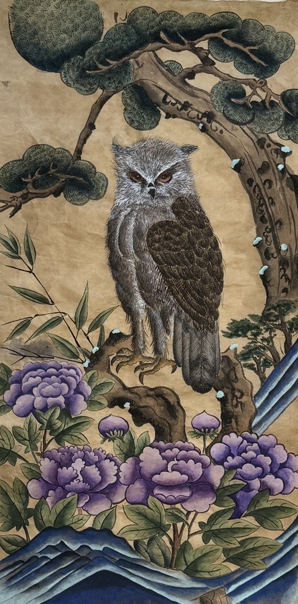
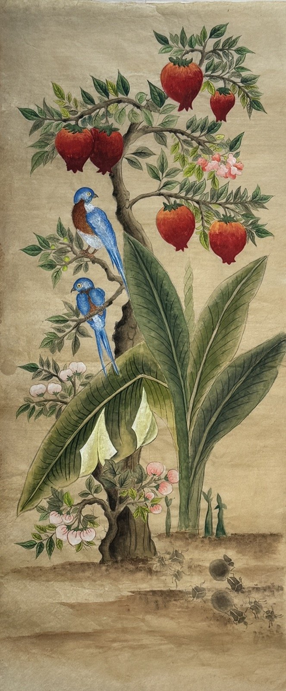
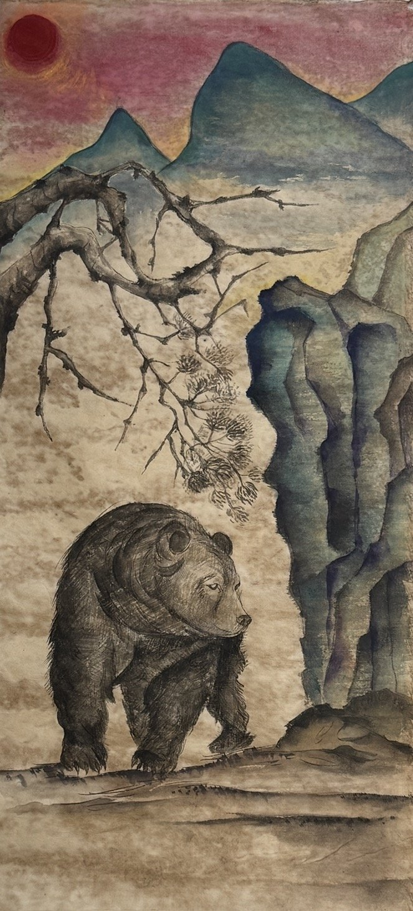
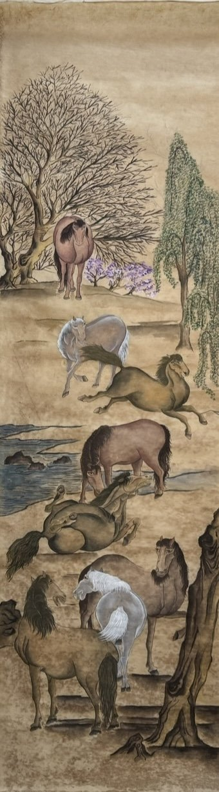
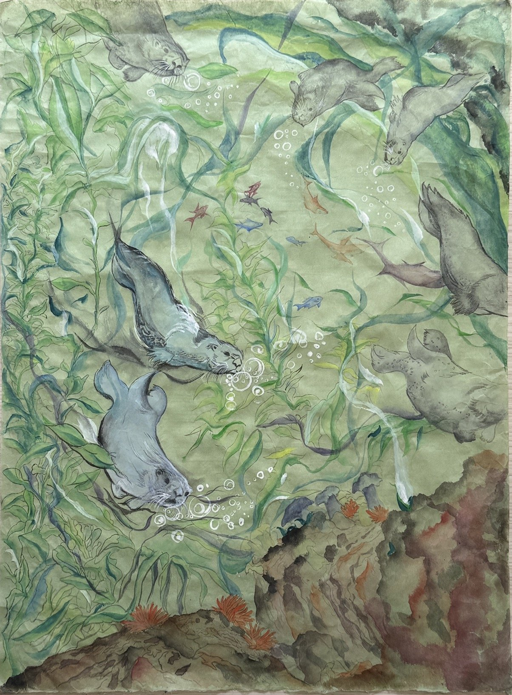
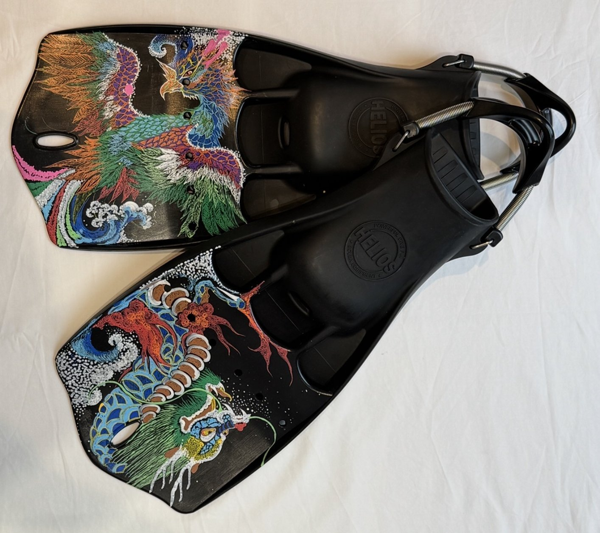
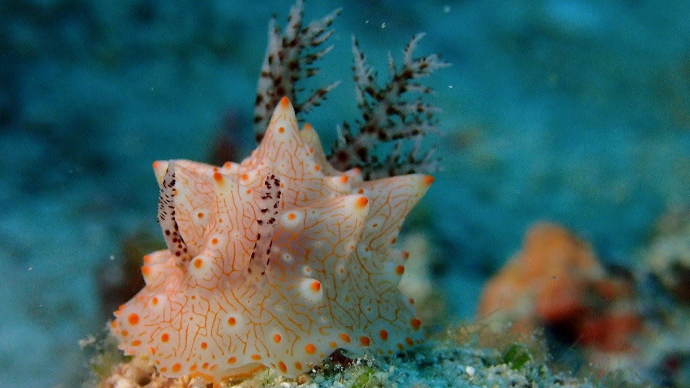
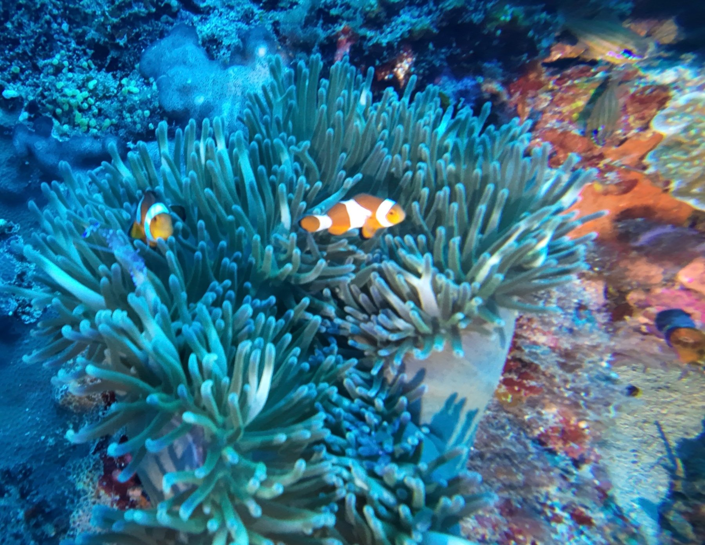
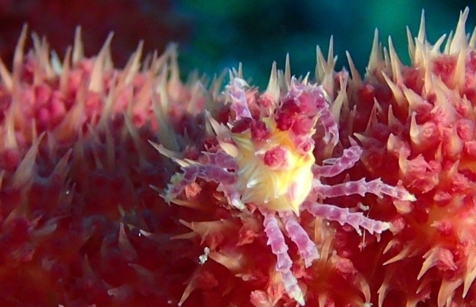
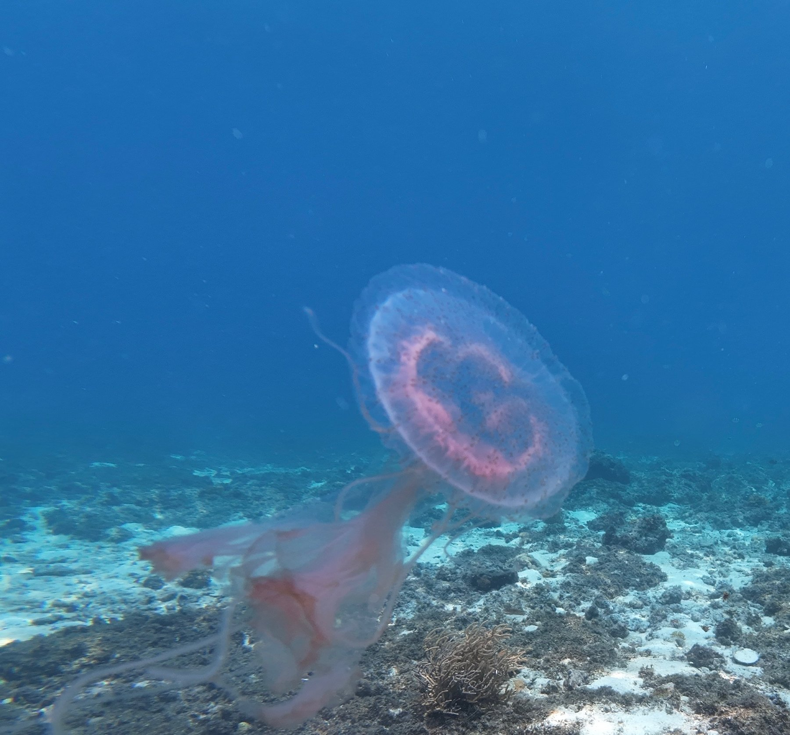

Art
Art
Watercolor paintings on hanji, the traditional Korean mulberry paper, along with a pair of painted dive fins and photographs from my dives.
Click any piece to see it full size.
Paintings on hanji

25.6 × 13 in

35.8 × 15.4 in

29 × 13 in

56.7 × 16 in
From the water
Beneath the Kelp Canopy shares its subject with my kelp research. Underwater Wings is painted on a pair of scuba fins.

29 × 22 in

24.4 × 9.8 in
Underwater photography



